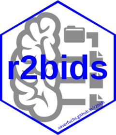

Create BIDS-compliant behavioral data files
write_bids.RdThis function creates BIDS-compliant behavioral data files in .tsv format.
It generates a participants file (participants.tsv) and individual
task-based files for each participant and session.
Arguments
- data
A data frame containing the participant information and behavioral data.
- output_dir
The directory where the BIDS dataset will be saved.
- task_name
Name of the task, which will be used in the filename.
- participant_info_cols
A character vector of column names to include in the
participants.tsvfile. These variables will now be included in the tsv files containing the task data.- file_suffix
A string defining the suffix for the task files. In BIDS it is usually "events" or "beh" (the default) for "behavior"
Examples
data <- data.frame(participant_id = c(1, 1, 2, 2),
session = c(1, 2, 1, 2),
age = c(25, 25, 30, 30),
gender = c('m', 'm', 'f', 'f'),
response_time = c(100, 200, 150, 180))
write_bids(data, output_dir = "bids_dir", task_name = "RTTask", participant_info_cols = c("age", "gender"))
#> Participants data saved: bids_dir/participants.tsv
#> Task data saved: bids_dir/1/1/1_task-RTTask_beh.tsv
#> Task data saved: bids_dir/1/2/1_task-RTTask_beh.tsv
#> Task data saved: bids_dir/2/1/2_task-RTTask_beh.tsv
#> Task data saved: bids_dir/2/2/2_task-RTTask_beh.tsv